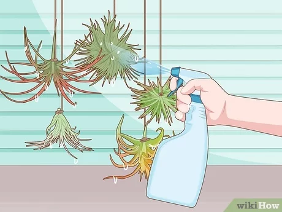

How To Water Air Plants
Method 1 of 2:
Soaking Loose Air Plants
1. Fill a clean tub, bucket, or sink with bottled or filtered tap water.
Choose a container or receptacle that can easily accommodate all of your air plants. Add room-temperature bottled or filtered tap water to the container. Make sure you use enough water to fully submerge each clump.
- Always clean out the container before using it to water your air plants.
- Avoid using distilled water for this since the distillation process removes crucial nutrients.
2. Submerge your air plants in the water.
Air plants don’t grow in pots or soil, so you can easily gather the small, loose clumps with your hands. Place each clump in the water bath and push it under the surface. You can soak multiple air plants simultaneously.[3]
- If your air plant is mounted to a surface, like a heavy shell or piece of driftwood, you'll probably need to mist it instead of submerging it.
3. Soak the plants for 15 minutes and shake off the excess water.
The air plants may float up to the surface as they soak, which is fine—just make sure the majority of each clump stays submerged for the full 15 minutes. Then, grab each clump, remove it from the bath, and shake it off to get rid of excess water.
- Excess water tends to collect between the center leaves if you don’t give them a gentle shake first, which can eventually lead to rot and other issues.
- If your air plants are particularly dry, leave them in the water for up to 1 hour.
4. Place each clump upside down on a paper towel to air-dry completely.
Air-drying typically takes about 30 minutes, but large or intricate clumps can take longer. You can touch the center leaves with your fingertips to check for moisture. Return the plants to their original locations once they’re totally dry.
- Always place clumps upside down to air-dry so excess moisture can drain away.

5. Repeat this process weekly to keep air plants healthy.
If the leaves look pale-green and feel soft, water the plant more often. Curled or rolled leaves also indicate dehydration.
- During the winter months, you can reduce watering to every 2 weeks.
Method 2 of 2:
Misting Mounted Air Plants
1. Fill a plastic spray bottle with bottled or filtered tap water.
Use room-temperature water for the best results. Be sure to avoid using distilled water, which doesn’t contain the necessary nutrients your air plants need to thrive.
2. Spray each clump generously until the water is dripping off the leaves.
Misting delivers enough water to your air plant as long as you’re generous and thorough. Saturate the plant until water is running off the leaves.
- Mounted air plants often need to be misted because the object they're attached to can’t be submerged in water. If the object is porous, bulky, or heavy, it's better to mist the plants..
3. Mist your air plants at least once a week to keep them hydrated.
Since they’re tropical or subtropical in nature, air plants will not last long without steady moisture.[11] Thoroughly mist them at least once a week.
4. Water your plants more often if you notice signs of dehydration.
Air plants can dry out more easily if you’re unable to submerge them in water. To prevent dehydration, watch for leaves that feel soft or look pale green. Leaves may also curl or roll up when they are dehydrated.
- Air plants can dry out more easily if you’re unable to submerge them in water. To prevent dehydration, watch for leaves that feel soft or look pale green. Leaves may also curl or roll up when they are dehydrated.
- A hydrated air plant will look lush with darker green leaves.
5. Place mounted air plants in a location that gets good air circulation.
Unevaporated moisture can cause air plants to rot. Keeping mounted air plants in an area that gets plenty of air circulation so the leaves can dry completely after each misting session.
- For example, a spacious, uncluttered room that gets plenty of light is a great place for your air plants.
- Make sure the surface your air plant is mounted on does not hold or absorb water. For example, cork would not be a good surface because it soaks up water like a sponge.
- Remember, your air plants need plenty of bright light, so keep that in mind when you're deciding where to put them. If they're indoors, keep them within 3–7 ft (0.91–2.13 m) of a window.